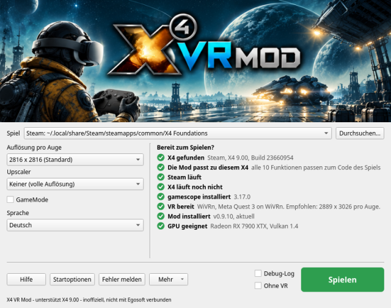
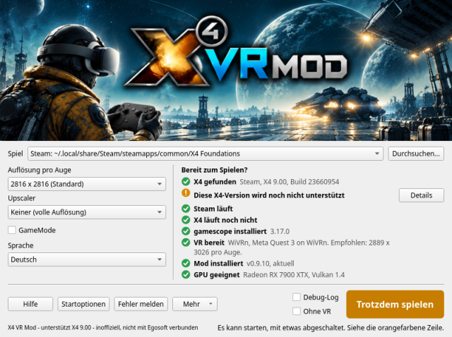
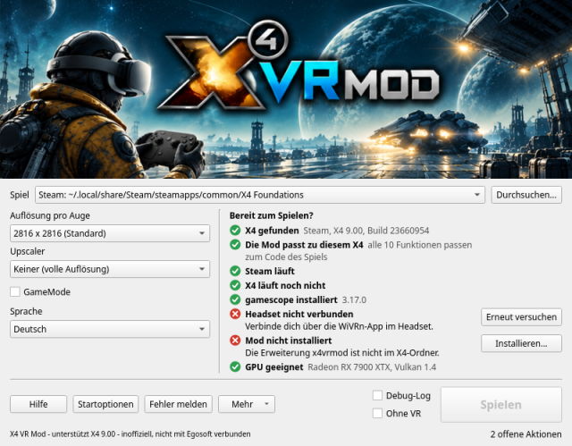
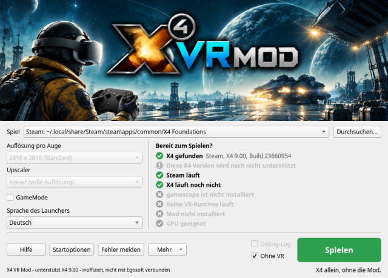
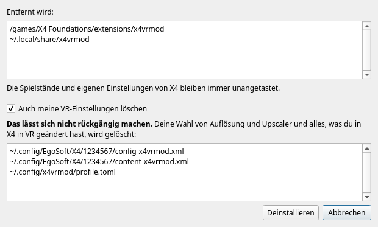
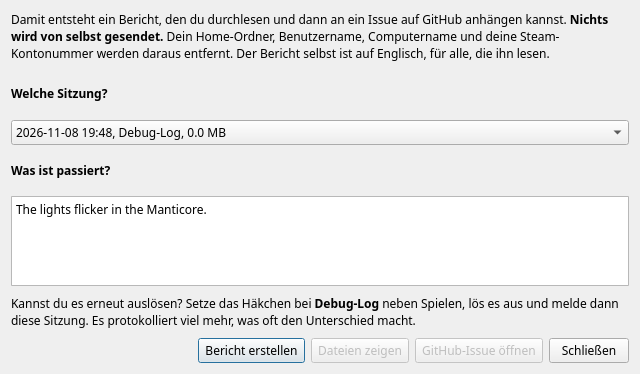

Dieses Fenster findet X4: Foundations, richtet die Mod ein, sagt dir, ob alles bereit ist, und startet das Spiel in VR. Halte den Mauszeiger über ein beliebiges Element im Fenster, um eine kurze Erklärung zu sehen. Diese Seite enthält den Rest.
Erste Schritte | Spiel | Auflösung pro Auge | Einstellungen je Headset | Upscaler | GameMode | Sprache | Augenabstand | Spielen | Ohne VR | Die Checkliste | Startoptionen | Installieren | Deinstallieren | Mehr | WiVRn oder SteamVR? | Fehlerbehebung | Fehler melden

Die Checkliste aktualisiert sich selbst, du musst also nichts neu öffnen, nachdem du die Runtime gestartet oder das Headset verbunden hast.
Die Kopie von X4, die verwendet wird. Der Launcher fragt Steam, welche deiner Bibliotheken X4 enthält, und schaut in Heroics Liste der GOG-Spiele und in ~/GOG Games. Fehlt deine, klick auf Durchsuchen... und wähle das Programm namens X4.
Es muss die Linux-Version sein. Die Mod verändert das Linux-Programm von X4, während es läuft, und hängt sich über die Mechanismen von Linux selbst an seinen Vulkan-Renderer. Die Windows-Version unter Proton ist ein anderes Programm: Wählst du X4.exe, sagt dir der Launcher, dass das nicht funktionieren kann. Erzwingt Steam Proton für X4, schalte das in den Eigenschaften von X4 unter Kompatibilität aus und lass Steam die Linux-Version herunterladen.
GOG: Der Launcher findet sie, und alles funktioniert wie mit der Steam-Kopie. Wähle sie im Feld Spiel, wenn du beide hast.
Ein als Flatpak installiertes Steam wird nicht unterstützt, und das ist vorerst nicht geplant. Seine Sandbox erreicht weder die Teile der Mod noch gamescope, und VR ist darin für jedes Spiel schwieriger: Es erreicht nur WiVRns eigenes Flatpak, und SteamVR läuft dort mit verminderter Leistung. Wenn Spieler danach fragen, kann sich das ändern; sag es in einem Issue.
Der Launcher kennzeichnet eine Kopie von X4, die das Flatpak-Steam installiert hat. Nutze Steam aus den Paketen deiner Distribution oder eine GOG-Kopie, die kein Steam braucht.
Die Größe des Bildes für jedes Auge. Das Auge ist hier immer quadratisch. Größer ist schärfer, und deine GPU muss es zweimal zeichnen, einmal pro Auge.
Warum sie hier gewählt wird und nicht in X4: Die Bilder der Mod und der Bildschirm von gamescope bekommen ihre Größe beim Start des Spiels, und X4 übernimmt die Wahl in seinem Menü sofort, was eine laufende Sitzung kaputt macht. Deshalb wird sie vor dem Start gewählt.
Ist das Headset verbunden, markiert die Liste die Größe, die dem am nächsten kommt, was dein Headset verlangt. Das ist die Empfehlung der Runtime, die die Linsen schon berücksichtigt, und sie ist meist größer als das Display des Headsets.
Über 4068 pro Auge ist die 3D-Ansicht der Karte flach statt räumlich, weil X4 große Bilder so im Speicher ablegt. Mit SteamVR hat 4224 schon ein verworrenes Bild gezeigt; wenn du das siehst, geh niedriger.
Ausgangspunkte, berechnet aus dem Display jedes Headsets. Mittel ist das scharfe Bild zum vollen Preis. Niedrig ist dieselbe Größe mit Upscaler, X4 zeichnet also weniger als die Hälfte der Pixel. Hoch ist ein größeres Bild mit Upscaler, X4 zeichnet also ungefähr so viel wie bei Mittel, und der Upscaler und das größere Bild kosten obendrauf etwas mehr.
| Headset | Display, pro Auge | Niedrig | Mittel | Hoch |
|---|---|---|---|---|
| Meta Quest 3 | 2064 x 2208 | 2816 + FSR 1 Qualität | 2816 | 4224 + FSR 1 Qualität |
| Steam Frame | 2160 x 2160 | 2816 + FSR 1 Qualität | 2816 | 4224 + FSR 1 Qualität |
| Pico 4 | 2160 x 2160 | 2816 + FSR 1 Qualität | 2816 | 4224 + FSR 1 Qualität |
| Meta Quest 3S | 1832 x 1920 | 2400 + FSR 1 Qualität | 2400 | 3600 + FSR 1 Qualität |
| Meta Quest 2 | 1832 x 1920 | 2400 + FSR 1 Qualität | 2400 | 3600 + FSR 1 Qualität |
| Valve Index | 1440 x 1600 | 2048 + FSR 1 Qualität | 2048 | 3072 + FSR 1 Qualität |
| HTC Vive Pro | 1440 x 1600 | 2048 + FSR 1 Qualität | 2048 | 3072 + FSR 1 Qualität |
| HTC Vive | 1080 x 1200 | 1600 + FSR 1 Qualität | 1600 | 2400 + FSR 1 Qualität |
Gespielt wurden nur Mittel und Hoch auf der Quest 3, mit WiVRn und einer Radeon RX 7900 XTX. Der Rest ist dieselbe Regel, angewandt auf das jeweilige Display. Probierst du eines aus, ist das, was du herausfindest, in einem Fehlerbericht willkommen.
Ein Upscaler lässt X4 ein kleineres Bild zeichnen und vergrößert es, auf Kosten von etwas Schärfe. Ist einer an, zeigt „Rendert“ unter der Liste, wie groß X4 wirklich zeichnet.
Die automatische Wahl: Gehst du mit Keiner über 3200 pro Auge, wird FSR 1 Qualität gewählt, weil so viele Pixel zweimal zu zeichnen mehr ist, als die meisten GPUs flüssig schaffen. Ein Hinweis sagt das, und mit Keiner machst du es rückgängig. Eine Wahl, die du selbst getroffen hast, wird nie geändert, und zurück bei 3200 oder weniger kehrt der Launcher nur dann zu Keiner zurück, wenn er selbst gewählt hatte.
Ist Feral GameMode installiert, erscheint dieses Kästchen. Mit Häkchen gibt es dem Spiel Vorrang vor dem Rest deines Systems, solange es läuft, was meist ein paar Bilder pro Sekunde mehr bringt. Es gilt, egal wie du das Spiel startest: Spielen, Ohne VR, die Startzeile von Steam oder ein Terminal. Ist es nicht installiert, erscheint das Kästchen nicht und nichts ändert sich.
Dieses Fenster und diese Hilfe starten in der Sprache deines Systems, wenn sie Englisch, brasilianisches Portugiesisch, Französisch, Russisch oder Deutsch ist, und sonst auf Englisch. Die Liste Sprache unter GameMode ändert das, und deine Wahl bleibt gespeichert. X4 selbst behält die Sprache, die du dafür in X4 oder in Steam gewählt hast.
Die Übersetzungen sind ein erster Entwurf, nach bestem Wissen gemacht. Ist ein Wort falsch oder klingt es seltsam, sind Korrekturen als Pull Request oder als Kommentar in einem Issue willkommen. Ein Fehlerbericht und das, was der Befehl x4vrmod ausgibt, bleiben auf Englisch, damit alle, die sie lesen, sie verstehen.
Hier gibt es nichts einzustellen: Die Mod nimmt den Abstand deiner Augen vom Headset, ab dem ersten Bild. Drehst du am IPD-Regler des Headsets, folgt die Welt beim Spielen.
Um ihn zu überschreiben, wenn die Welt zu klein oder zu groß wirkt, gib deinen eigenen Abstand in Metern an. Ein Optiker oder eine Handy-App kann ihn messen. Er gilt ab dem nächsten Spielstart und bleibt, bis du ihn entfernst:
x4vrmod config set ipd 0.0635
Das sind 63,5 mm. Zurück zum Wert des Headsets:
x4vrmod config unset ipd
Solange ein eigener Wert gesetzt ist, folgt die Welt dem Regler des Headsets nicht mehr. Meldet das Headset einmal einen Abstand, den keine Augen haben können (außerhalb von 50 bis 80 mm), glaubt die Mod ihm nicht, behält den letzten guten oder sonst 64 mm und vermerkt das in ihrem Log.
Grünes „Spielen“: Alles ist bereit.
Orangefarbenes „Trotzdem spielen“: Das Spiel kann starten, aber etwas wird nicht funktionieren. Die orangefarbene Zeile sagt, was. Das passiert vor allem nach einem Update von X4.

Graues „Spielen“: Es kann noch nicht starten. Eine rote Zeile sagt, warum, meist mit einem Knopf, der es behebt.

Solange das Spiel läuft, steht auf dem Knopf „X4 läuft“, und der Launcher hält sich zurück. Danach sagt dir eine Zeile, wie die Sitzung gelaufen ist.
Setz das Häkchen bei Ohne VR, um X4 allein auf deinem Bildschirm zu starten, so wie es ohne die Mod startet, auch wenn VR läuft. Nichts von der Mod wird geladen und ihre Erweiterung bleibt aus, es gelten also deine eigenen Einstellungen und Spielstände, und die Zeilen, die nur für die Mod zählen, werden grau.

Das ist eine Vergleichsbasis: Geht auch dort etwas schief, liegt es nicht an der Mod, und das in einem Fehlerbericht zu sagen, hilft sehr.
Der Launcher hat eine Linux-Kopie von X4 gefunden und ihre Version gelesen. Siehe Spiel, falls nicht.
Mehrere Funktionen der Mod ändern den Code von X4 im Speicher und brauchen deshalb genau den Code, für den sie geschrieben wurden. Statt eine Prüfsumme zu vergleichen, die schon einen kleinen Hotfix ablehnen würde, der nichts von dem ändert, was wir anfassen, führt der Launcher die eigenen Prüfungen der Mod auf der Datei von X4 aus, Funktion für Funktion.
Ist diese Zeile orange, schalten sich die aufgeführten Funktionen zur Sicherheit ab, und das Spiel läuft trotzdem. Warte nach einem Update von X4 auf eine neue Version der Mod, oder spiel ohne sie.
Die Steam-Version von X4 braucht ein laufendes Steam, weil X4 es beim Start nach deinem Konto fragt. Eine GOG-Kopie braucht es nicht, und diese Zeile erscheint dann nicht.
Die Mod muss vom Start von X4 an da sein, eine schon offene Kopie muss also zuerst geschlossen werden.
gamescope gibt X4 einen virtuellen Bildschirm in der Größe für beide Augen, egal welche Auflösung dein Desktop hat. Es ist ein eigenes Programm; installiere es aus den Paketen deiner Distribution.
Der Launcher fragt deine VR-Runtime kurz über OpenXR, ob ein Headset da ist, ohne eine VR-Sitzung zu starten, was verlässlicher ist, als nach laufenden Programmen zu suchen.
Die Teile der Mod, die Installieren... gemeinsam einrichtet. Einer sitzt zwischen X4 und deiner GPU und erzeugt die beiden Augenbilder, und er wird nur geladen, wenn die Mod ihn anfordert, sodass kein anderes Programm betroffen ist. Der andere ist eine kleine X4-Erweiterung im Ordner extensions von X4, die den Kopf weiter drehen lässt, als X4 es normalerweise erlaubt, und das Schwanken der Kamera entfernt. „Veraltet“ heißt, dass sie aus einer anderen Version stammen als dieser Launcher; Installieren... ersetzt sie.
Die Mod zeichnet beide Augen in einem Durchgang mit einer Vulkan-Funktion namens Multiview und braucht Vulkan 1.2 und ein freies Descriptor-Set. Fast jede GPU der letzten Jahre hat das. Ist diese Zeile rot, aktualisiere zuerst deinen Grafiktreiber.
Startoptionen gibt dir die genaue Zeile für deine Kopie, mit einem Knopf Kopieren. Spielen ist der einfachste Weg, und diese sind für den Fall, dass du lieber über Steam oder ein Terminal startest. Beide starten die Mod wie Spielen, mit den Einstellungen aus diesem Fenster.
Steam ersetzt %command% durch seinen eigenen Befehl für X4, und x4vrmod run startet X4 mit diesem Befehl, er muss also da sein. Solange die Zeile gesetzt ist, startet Steam X4 immer in VR; lösche sie, um wieder ohne VR zu spielen.
Ist Steam so eingestellt, dass es X4 über Proton startet, verweigert die Zeile den Start und sagt, warum, denn die Mod funktioniert nur mit der Linux-Version. Ein als Flatpak installiertes Steam wird nicht unterstützt: siehe Steam als Flatpak.
Der Knopf Installieren... erscheint in der Zeile der Checkliste, die er behebt. Aus einem Zip installiert, kopiert er die Mod nach ~/.local/share/x4vrmod und registriert ihren Vulkan-Layer nur für dich, sodass du den entpackten Ordner löschen kannst und die Startzeile von Steam weiter funktioniert. Aus einem Paket installiert, ist das schon da. In beiden Fällen legt er die Erweiterung in den X4-Ordner.
Was das mit deinen Spielständen macht: X4 markiert Spielstände, die mit einer Erweiterung von außerhalb Egosofts entstanden sind, als modifiziert. Die Erweiterung der Mod ist nur in VR-Sitzungen aktiv, Spielen ohne VR ist also nicht betroffen.
Deine Einstellungen: Die config.xml von X4 wird nie geschrieben. In VR führt die Mod eigene Kopien daneben, namens config-x4vrmod.xml und so weiter, sodass das, was du in VR änderst, in VR bleibt und dein Spiel ohne VR seine Einstellungen behält. Das Einzige, was sie nicht kopiert, ist die Skalierung der Oberfläche von X4, die sie mit 0,6 beginnt, weil X4s eigene 1,0 in einem Headset zu groß ist. Du kannst sie weiterhin in den Optionen von X4 ändern.
Unter Mehr, damit man es nicht aus Versehen anklickt. Es listet alles auf, was es entfernen wird, bevor es das tut, und entfernt immer nur die eigenen Dateien der Mod. Die Spielstände und eigenen Einstellungen von X4 bleiben immer unangetastet.

Das Kästchen Auch meine VR-Einstellungen löschen ist zunächst aus. Lass es aus, wenn du vielleicht zurückkommst. Mit Häkchen werden deine VR-Einstellungen in den Profilordnern von X4 und die Auswahl in diesem Fenster gelöscht, und das lässt sich nicht rückgängig machen.
Ein Paket bleibt installiert, bis du es mit deiner Paketverwaltung entfernst.
Logs öffnen: Jede Sitzung schreibt hier ihr eigenes Log, und die neuesten 20 werden behalten. Ein Fehlerbericht braucht das Log der Sitzung, in der etwas schiefging.
Zum Anwendungsmenü hinzufügen: für das Zip, sobald es installiert ist. Ein Paket hat seinen Eintrag schon.
Erweitert: das Sichtfeld von X4 und zusätzliche Umgebungsvariablen, um auszuprobieren, worum ein Fehlerbericht bittet. Zum Spielen brauchst du das nicht.
Auf Standard zurücksetzen: setzt die Einstellungen dieses Fensters auf ihre Standardwerte zurück und behält das gewählte Spiel und die Sprache.
Über: die Version und die Lizenz. Dies ist eine inoffizielle Mod, nicht mit Egosoft verbunden und nicht von Egosoft unterstützt.
Wir empfehlen WiVRn. Auf demselben Headset liefert es ein klareres Bild als SteamVR, dessen Bild meist flüssig, aber unschärfer ist, und es lässt dich den Video-Codec wählen. SteamVR hat außerdem bei 4224 pro Auge ein verworrenes Bild gezeigt, wo WiVRn sauber bleibt.
WiVRn streamt zu eigenständigen Headsets wie der Quest und der Pico. Ein Headset, das per Kabel am PC hängt, wie eine Valve Index oder eine HTC Vive, streamt nicht und nutzt daher SteamVR.
Bei WiVRn macht der Video-Codec den größten Unterschied. Du wählst ihn in den Einstellungen von WiVRn.
| Codec | Was dich erwartet |
|---|---|
| AV1, über VAAPI | Scheint der beste zu sein: ein klares Bild mit minimaler Latenz. Er braucht eine GPU, die AV1 kodieren kann. |
| H.265 | Ein sehr klares Bild, aber er fügt Latenz hinzu, die sich beim Spielen als Artefakte und Ruckeln zeigen kann. |
| H.264 | Effizient, aber unscharf. |
Bei SteamVR wird der Codec für dich gewählt. Meist ist das flüssig, aber im Vergleich zu WiVRn unscharf. Das ist einer der Gründe, warum wir WiVRn empfehlen.
Das liegt daran, dass das Steam-Overlay, das auch Steam Input übernimmt, nicht mit Wayland funktioniert. Das neuere 64-Bit-Steam, das auf dem Weg ist, könnte das irgendwann lösen.
Das wurde mit SteamVR bei 4224 pro Auge gesehen. Wähle eine niedrigere Auflösung pro Auge.
Die Zeile neben Spielen zeigt das Letzte, was der Start gesagt hat. Erklärt das nichts, melde es: Ein Bericht funktioniert auch dann, wenn das Spiel nie bis zu einem Log gekommen ist.
Fehlerberichte sind der Weg, wie die Mod besser wird, und der Launcher erledigt den Großteil der Arbeit:

Kannst du es erneut auslösen, tu es mit einem Debug-Log. Setz das Häkchen bei Debug-Log neben Spielen, lös es aus, beende das Spiel und melde diese Sitzung. Das Spiel läuft gleich, und das Log hält viel mehr von dem fest, was die Mod getan hat. Es wird mehrere Dutzend MB pro Sitzung groß, lass es also sonst aus; beim nächsten Öffnen dieses Fensters ist es wieder aus.
Was in einem Bericht steht: die Versionen der Mod und von X4, dein System, deine GPU und dein Headset, die Checkliste, deine Einstellungen, das Log der Sitzung und der Backtrace eines Absturzes, falls das System einen aufbewahrt hat. Es ist reiner Text, auf Englisch, und mit Dateien zeigen kannst du ihn lesen.
Der Ladebildschirm in VR zeigt Version, Build und Datum der Mod in seiner Ecke. Das ist praktisch anzugeben, wenn du gar nicht erst bis zu einem Bericht kommst.
Was herausgenommen wird: dein Home-Ordner, dein Benutzername, dein Computername und deine Steam-Kontonummer. Nichts verlässt deinen Computer, außer du hängst es selbst an.